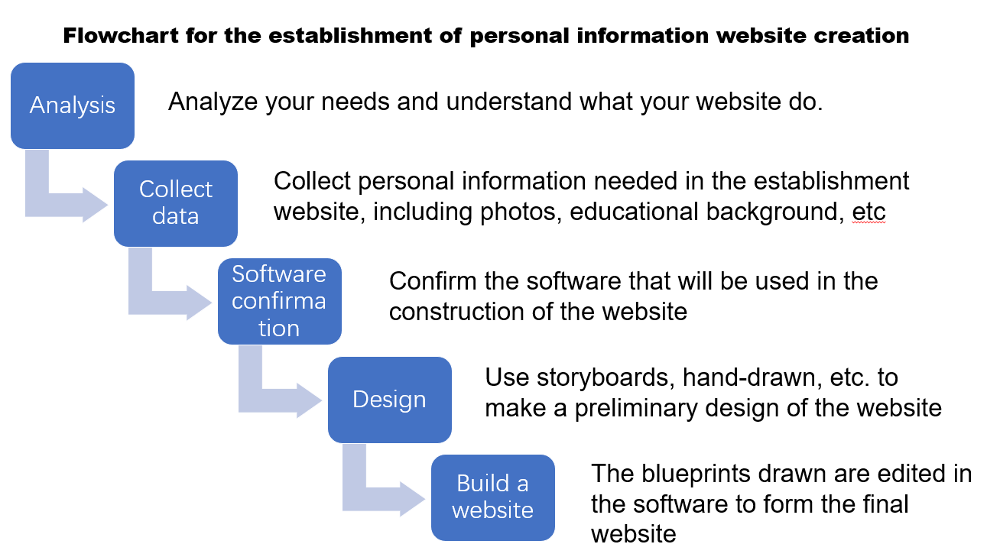

The IT project described on this page is about creating a personal information web page, and the name of the project is personal information website creation
Includes a flowchart for web page construction (the process of completing the project), a system diagram (required software and hardware).

Hardware: Router: NetEngine AR Series Enterprise Routers
Wi-Fi： HUAWEI WiFi Mesh 7 Moden: HUAWEI Modem 2.0 Driver Software: Firewall: Microsoft Defender Firewall Database: Alibaba Cloud DatabaseValues and methodology
The establishment of a personal information website can collect scattered personal information into the same website. The establishment of the website is convenient for the user's parents and friends to understand the user's information. At the same time, in the recruitment process, it is also more convenient for the company to understand the basic information of users.
The method of completing this IT project is waterfall. Complete the project step by step, such as the steps of building a website. 1.Analyze your needs and understand what your website do. 2.Collect personal information needed in the establishment data website,including photos,educational background,etc . 3.Confirm the software that will be used in the confirma construction of the website . 4.Use storvboards,hand-drawn.etc.to make a preliminary design of the website. 5.The blueprints drawn are edited in website the software to form the final website.